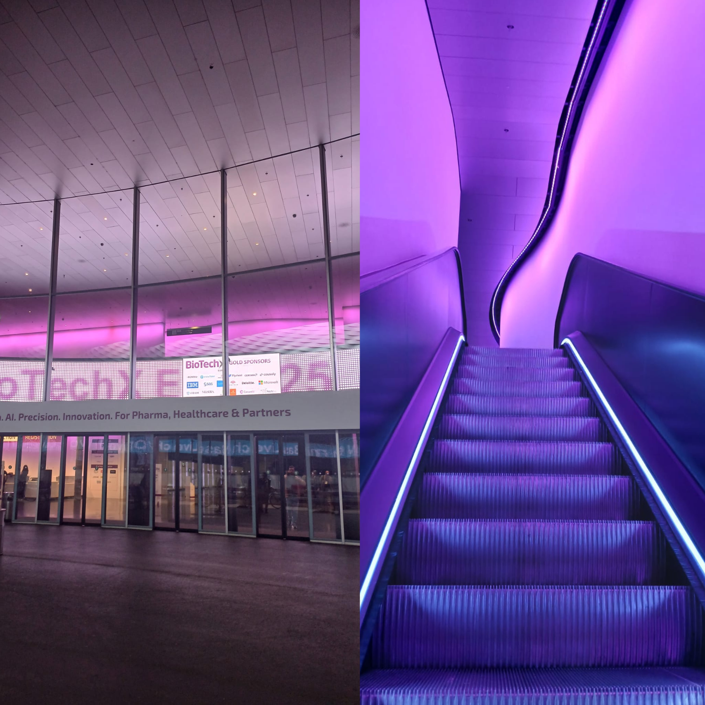

Home
Blog
Home
Blog
Writing
Thoughts on Digital Health
All
Conferences
Security
Personal
Conferences
Mar 5, 2026
health.tech summit Basel 2026 – An article, an expression, and a reflection!
Read post
Personal
Jan 2, 2026
Goodbye Roche
Read post
Security
Nov 5, 2025
Why the Spanish Security Framework (ENS) is a must-to-know in healthcare — even outside Spain
Read post

Conferences
Oct 15, 2025
BioTechX Europe 2025 Basel
Read post
Personal
Sep 29, 2025
Who am I?
Read post